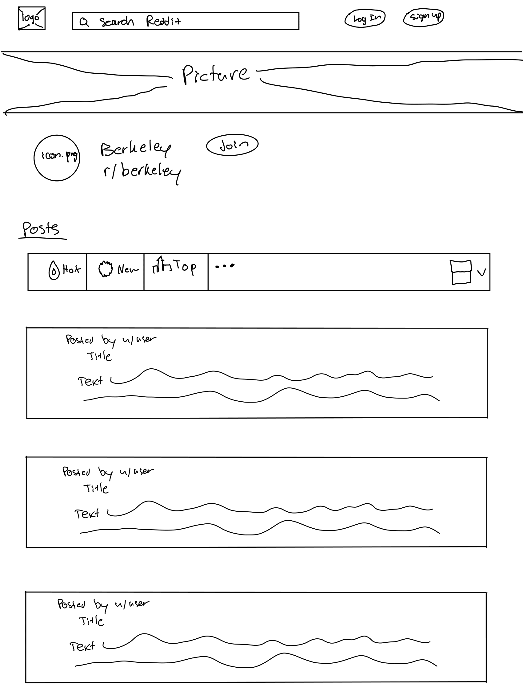

-
Using the favorite website you chose in homework 1, create a wireframe for one page of it using pen/paper, PowerPoint, or any your tool of choice. (use the 'img' tag!) Make sure to let us know what the name of your website is (Use the 'p' tag!)
Website: https://www.reddit.com/r/berkeley/
-
Try to improve the website you've chosen, and create a redesigned wireframe of one page for the same website using the principles of visual hierarchy that you learned from the article.

-
What is the goal of the website? Who is it intended for? How does the design accomplish this? Write 2-3 sentences answering these questions. (Use the 'p' tag again!)
The website www.reddit.com/r/berkeley/ is designed to be used by Berkeley residents (but its mainly used by UC Berkeley students) to discuss various topics in the community. The design accomplishes this by allowing users to easily scroll through and look at various posts and read/comment on their topics. You can even use the search bar to find specific topics that you want to find out more information on.
-
Write 2-3 sentences about what problems your redesign addressed, and how it solved them.
I made the picture smaller to allow for more important information to have more prominence on the page. I also added white space between posts so that it feels less cluttered on the eyes. Finally, I moved the margins in on the posts in order to make reading them easier on the eyes versus scanning all the way left to right.
NOTE: Make sure to include the wireframe images in the website and don't just put it in your assets folder!
Your wireframes should look something like this: